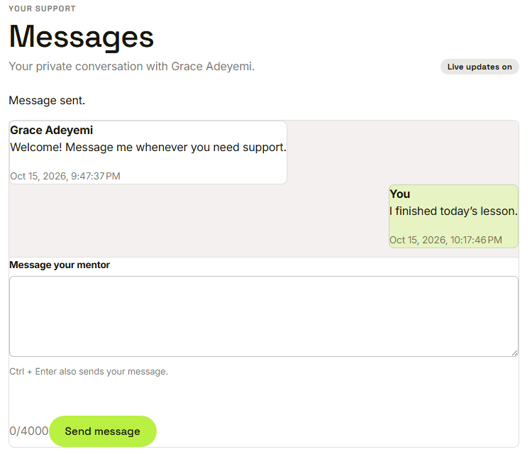
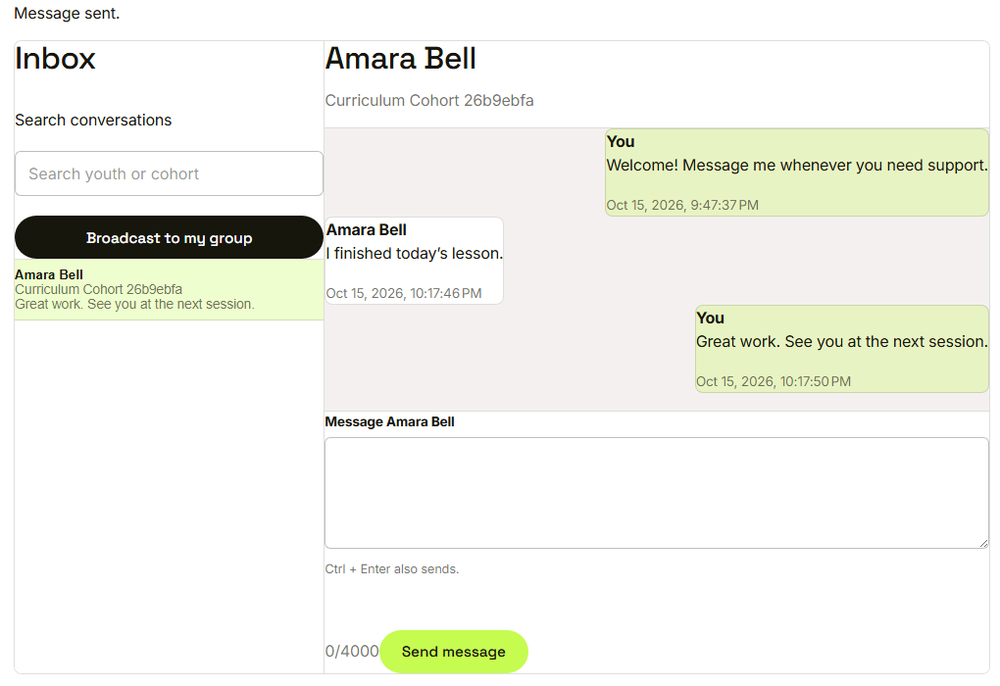
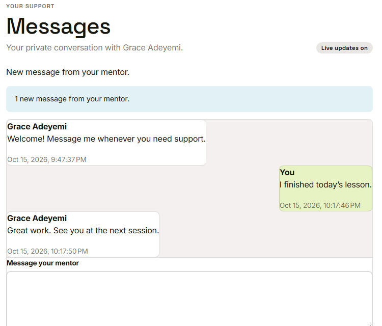
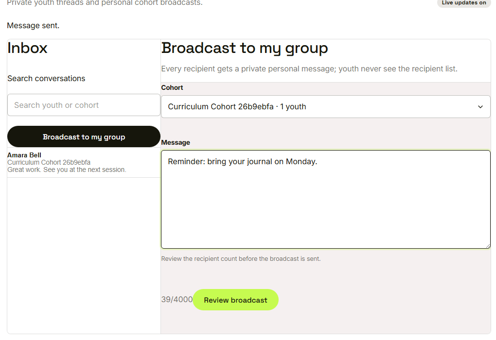
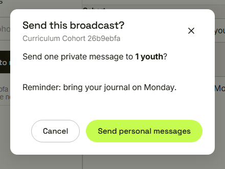
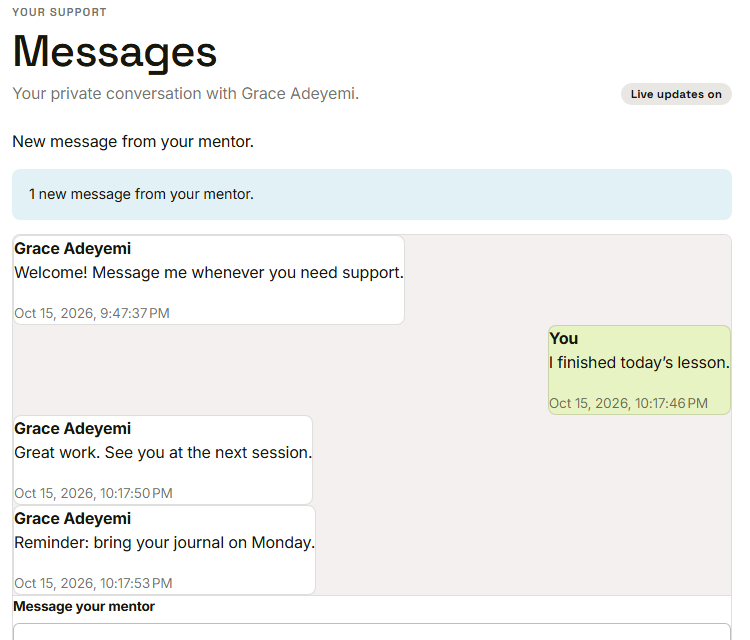

Waypoint · Video 068
Exchanging messages
Private threads and group broadcasts
A private conversation

Amara writes to her mentor
One conversation for each youth

Grace reads and replies
The reply arrives live

No refresh needed
Broadcast to my group

Pick the cohort and write the message
Review before sending

The dialog shows how many will receive it
One personal message each

The reminder appears in Amara's own thread
Things to remember
- Each conversation is private to a youth and their mentor
- Messages arrive live
- A broadcast is one personal message per youth
- A review step shows the recipient count first